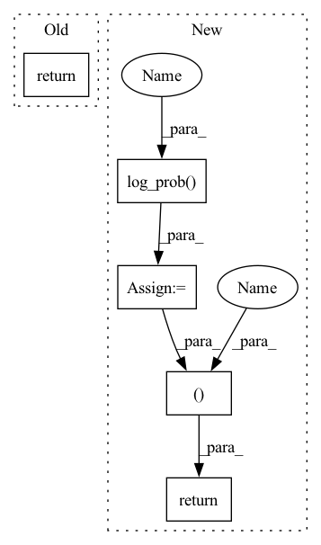

Pattern ID :13751

Before Change
a = t.relu(self.fc1(state))
a = t.relu(self.fc2(a))
a = t.tanh(self.fc3(a)) * self.action_range
return a
class ActorDiscreet(nn.Module):
After Change
if action is not None
else dist.sample())
act_entropy = dist.entropy()
act_log_prob = dist.log_prob(act)
return act, act_log_prob, act_entropy
class Critic(nn.Module):
def __init__(self, state_dim, action_dim):
In pattern: SUPERPATTERN
Frequency: 3
Non-data size: 5
Instances
Fragment ID: 45977151
Project Name: iffix/machin
Commit Name: 5b8a19f67832501f89f0861dca751b9e6978e63d
Time: 2020-06-16
Author: hanhanmumuqq@163.com
File Name: test/frame/algorithms/test_sac.py
M Class Name: Actor
N Class Name: Actor
M Method Name: forward(3)
N Method Name: forward(2)
M Parent Class: nn.Module
N Parent Class: nn.Module
M File Name: test/frame/algorithms/test_sac.py
N File Name: test/frame/algorithms/test_sac.py
M Start Line: 30
M End Line: 31
N Start Line: 30
N End Line: 41
'>
Before Change
sample.scatter_(-1, index, 1.0)
else:
sample = fun.gumbel_softmax(logits, hard=True)
return sample
class Beta(Distribution):
After Change
sample.scatter_(-1, index, 1.0)
else:
sample = fun.gumbel_softmax(logits, hard=True)
log_prob = distribution.log_prob(sample)
return sample, log_prob
def convert_parameters_beta(parameters):
parameters = 1.0 + fun.softplus(parameters)
'>
Fragment ID: 45977150
Project Name: cherrypiesexy/imitation_learning
Commit Name: 5f3e6db6dccdade38873d9b13343ebaa7405d616
Time: 2020-08-22
Author: dmitry.akimov@giant.ai
File Name: algorithms/distributions.py
M Class Name: GumbelSoftmax
N Class Name: GumbelSoftmax
M Method Name: sample(3)
N Method Name: sample(3)
M Parent Class: Categorical
N Parent Class: Categorical
M File Name: algorithms/distributions.py
N File Name: algorithms/distributions.py
M Start Line: 61
M End Line: 61
N Start Line: 56
N End Line: 64
'>
Before Change
else:
distribution = self.dist_fn(logits=logits)
sample = distribution.sample()
return sample
def log_prob(self, parameters, sample):
logits = parameters
After Change
sample = logits.argmax(dim=-1)
else:
sample = distribution.sample()
log_prob = distribution.log_prob(sample)
return sample, log_prob
def log_prob(self, parameters, sample):
logits = parameters
distribution = self.dist_fn(logits=logits)
'>
Fragment ID: 45977152
Project Name: cherrypiesexy/imitation_learning
Commit Name: 5f3e6db6dccdade38873d9b13343ebaa7405d616
Time: 2020-08-22
Author: dmitry.akimov@giant.ai
File Name: algorithms/distributions.py
M Class Name: Categorical
N Class Name: Categorical
M Method Name: sample(3)
N Method Name: sample(3)
M Parent Class: Distribution
N Parent Class: Distribution
M File Name: algorithms/distributions.py
N File Name: algorithms/distributions.py
M Start Line: 30
M End Line: 32
N Start Line: 27
N End Line: 33